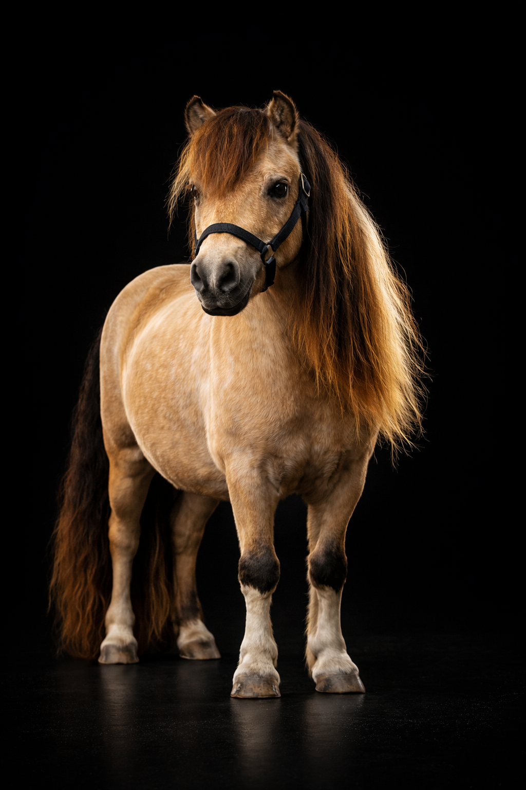
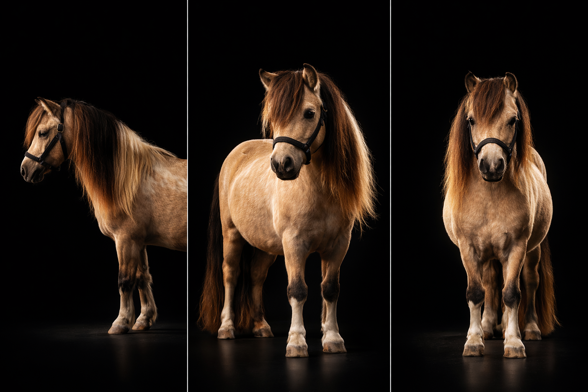

Macchiato
Étalon reproducteur · L'Arche du Négadis
Macchiato incarne l'excellence du Miniature Horse Américain (AMHA). Doté d'une présence scénique rare et d'un port de tête altier, il captive par ses allures relevées rappelant la noblesse des chevaux ibériques. Descendant direct de lignées légendaires, il dégage une puissance et une distinction rares, faisant de lui un reproducteur de premier choix pour le "modèle sport".
Caractéristiques
Un tempérament d'exception
Ce qui rend Macchiato unique, c'est sa personnalité fusionnelle. Très proche de l'homme, il représente l'équilibre recherché à l'Arche du Négadis :
- Un tempérament joueur : Macchiato est le "clown" du domaine, toujours en quête d'interaction et de partage.
- Un respect exemplaire : Malgré son énergie et son charisme, c'est un étalon d'une douceur remarquable, facile à manipuler au quotidien.
Une transmission héréditaire de la distinction
La valeur d'un étalon se mesure à sa capacité à marquer sa descendance. Macchiato transmet systématiquement :
- Allures : Son rebond, son amplitude et son équilibre naturel.
- Modèle : Un dos court, une encolure haute et une arrière-main puissante.
- Robe : Son gène crème (Buckskin) apporte une luminosité exceptionnelle à sa progéniture.
Pourquoi choisir Macchiato pour votre jument ?
L'analyse de son pedigree révèle un héritage génétique d'élite. En tant que petit-fils de Little Kings Buckeroo Banzaï, il porte en lui l'histoire des plus grands champions américains.
- Atouts Morphologiques : Un équilibre parfait entre élégance et solidité, avec une musculature d'athlète.
- Objectif d'élevage : Macchiato est le pilier idéal pour fixer le mental "froid" et respectueux, tout en garantissant des allures de show et des robes diluées très prisées.